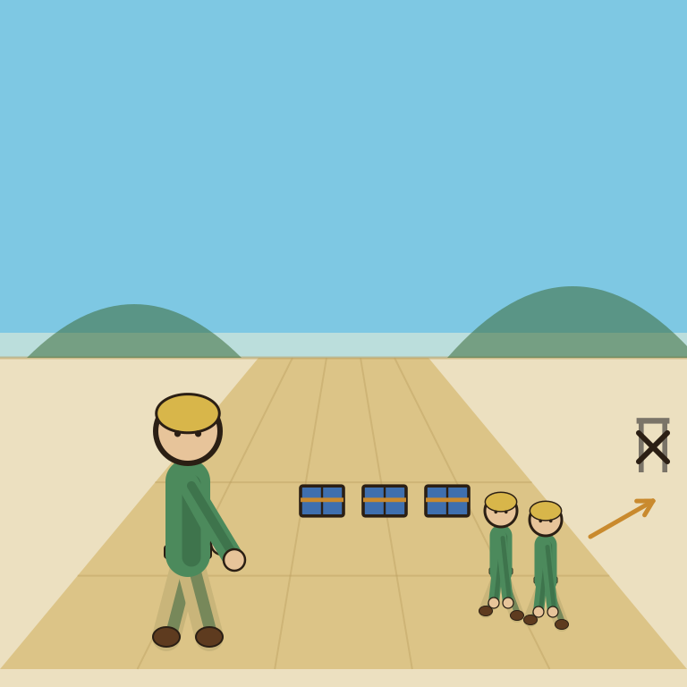

Craft

The parchment was so beautiful nobody noticed three weeks passed and nothing was written on it.
Craft is a notes and document app built around visual polish, block-based pages with real typography, custom cover art, and an AI assistant baked into every plan, positioned as a more design-forward alternative to Notion. The free plan covers 1,500 blocks and 1GB of storage with 15 AI assistant credits; Plus removes every content limit for $8/month ($4.80/month billed annually), and Family ($15/month) or Team ($50/month) bundle multiple Plus accounts into a shared space. The verdict is a genuinely good value once you outgrow the free tier, especially against Notion's pricier per-seat plans, but its AI features are noticeably lighter than Notion AI's.
Craft is what happens when someone decides note-taking apps are allowed to look nice. The free plan's 1,500-block limit sounds generous until you realize a single well-formatted project brief can eat a few hundred of them.
- Value for price7.5/10
- Capability6.5/10
- Ease of use8/10
- Trial safety7.5/10
Craft differs from Notion by trading database power and integrations for typography and layout: pages render with real print-style formatting by default, no manual styling needed, and it feels more like writing in a designed document than filling in a workspace template. That makes it a better fit for solo writers producing client-facing docs, and a worse fit for anyone who wants Notion's relational databases or third-party automations.
Pricing breakdown
- Free ($0): 1,500 blocks total, 1GB storage, 7-day version history, 15 AI assistant credits
- Plus ($8/mo, $4.80/mo billed annually): unlimited content and storage, 30-day version history, 50 AI credits/month, access to faster AI models
- Family ($15/mo): bundles 2 to 6 Plus accounts with a shared collaborative space
- Team ($50/mo): bundles up to 10 Plus accounts, 180-day version history, 2,500 AI credits per member/month
Where it falls short
Craft's AI assistant is a straightforward writing helper, drafting, rewriting, summarizing inside a doc, not the workspace-wide automation Notion AI offers, so it's a weaker fit if AI-driven task tracking or database queries are the actual goal. The free plan's 1,500-block cap also gets tight fast for anyone journaling or documenting client work regularly, expect to hit Plus within the first month or two of real use, not years down the line.
Pros
- Genuinely nicer to write and read in than most notes apps, real typography by default
- Plus at $8/month undercuts Notion's per-seat pricing significantly for solo use
- Family and Team tiers are fixed-price bundles, not per-seat, which is rare and solo-friendly for small collaborations
Cons
- Free plan's 1,500-block limit is tight for regular, ongoing use
- AI features are limited to writing help, no database automation or workspace agents
- Weaker integration ecosystem than Notion, fewer third-party connections
Common questions
Is Craft's free plan enough for regular note-taking?
It's tight for ongoing use. The free plan's 1,500-block limit gets used up faster than expected once you're writing and organizing regularly, most active users will feel the ceiling within a few weeks.
Is Craft a good Notion alternative?
Only if visual polish matters more to you than automation. Craft has a weaker integration ecosystem and no database automation or workspace agents, it's built for writers and note-takers who care how the page looks, not for building internal tools.
Is the $8/month Plus plan worth it?
Genuinely, once the free plan's block limit gets tight. It's one of the better-value upgrades on this list for the specific use case of solo writing and note-taking with a clean interface.